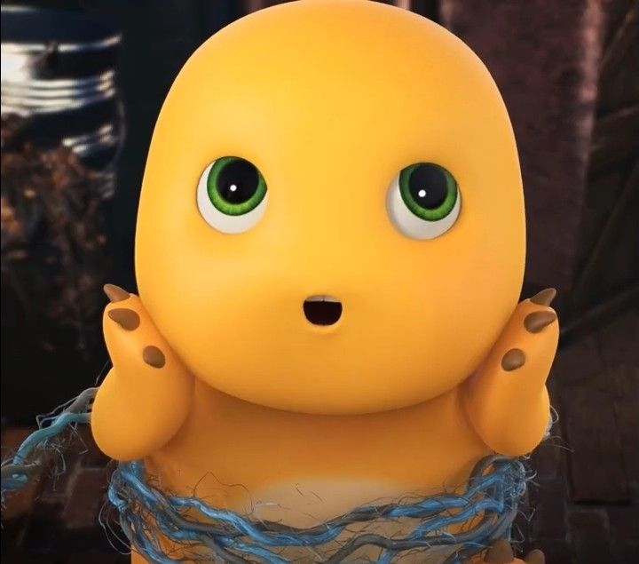

1. Tabel
Contoh Daftar Barang Belanja :
Daftar Barang
Jumlah Barang
Harga barang
Total
Sapu Ijuk
5
20.000
100.000
Kemoceng
3
7.000
21.000
Pel Lantai
2
15.000
30.000
Cikrak
1
10.000
10.000
TOTAL KESELURUHAN : 161.000
2. List
List ATK :
Buku
Pensil
Bolpoin
Penggaris
Tipe X
Cara bikin kopi :
Siapkan kopi, gelas, dan panci
Masak air panas secukupnya
Tuangkan kopi dan gula pada gelas
Tunggu air sampai mendidih, jika sudah tuangkan pada gelas sesuai takaran
Lalu aduk kopi perlahan agar airnya tercampur merata
Tunggu 2-3 menit, lalu kopi siap untuk di seduh
Daftar Menu Warung Bu Siti
Makanan
- Nasi goreng
- Mie goreng
- Bakso
Minuman
- Es teh
- Es jeruk
- Kopi
Contoh nested list
hardware
software
operating system
application
brainware
3. Menyajikan format tampilan gambar
dinoo kuninggg

gif nailonggg
4. Menyajikan format audio
seasons - wave to earth
5. Format tampilan video